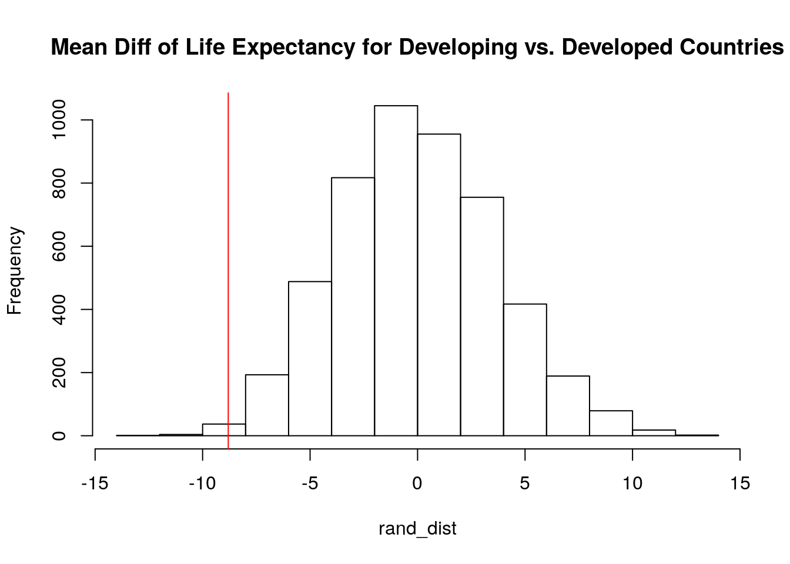
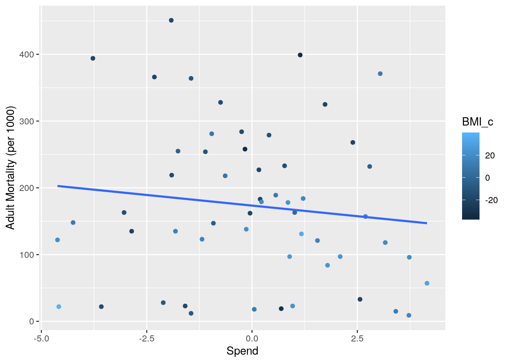
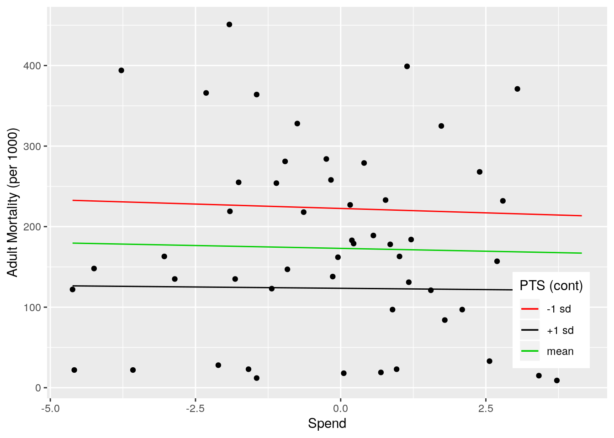
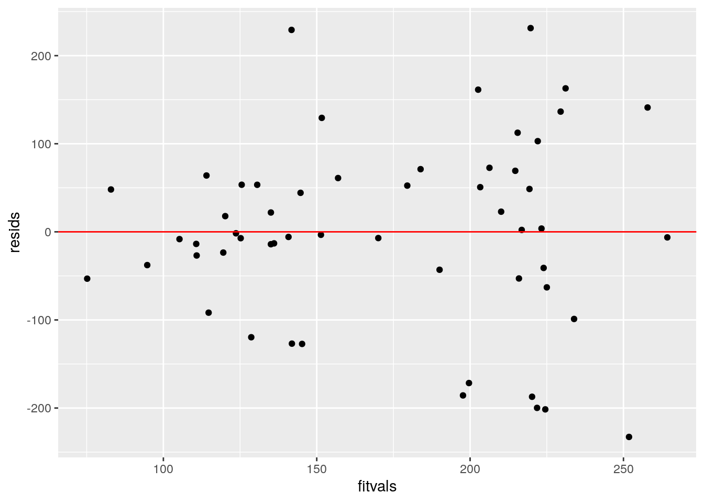
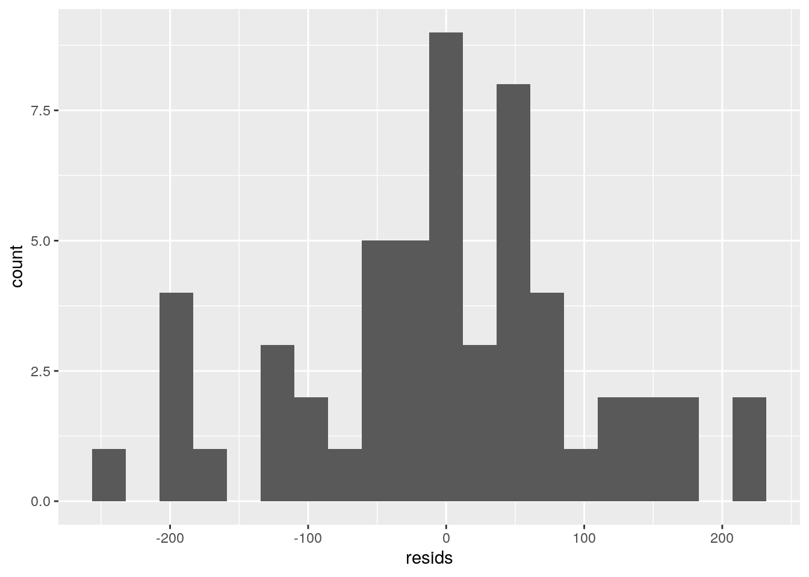
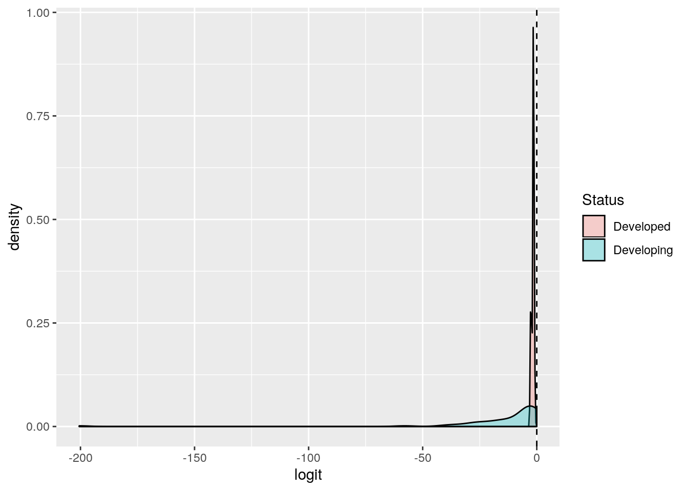
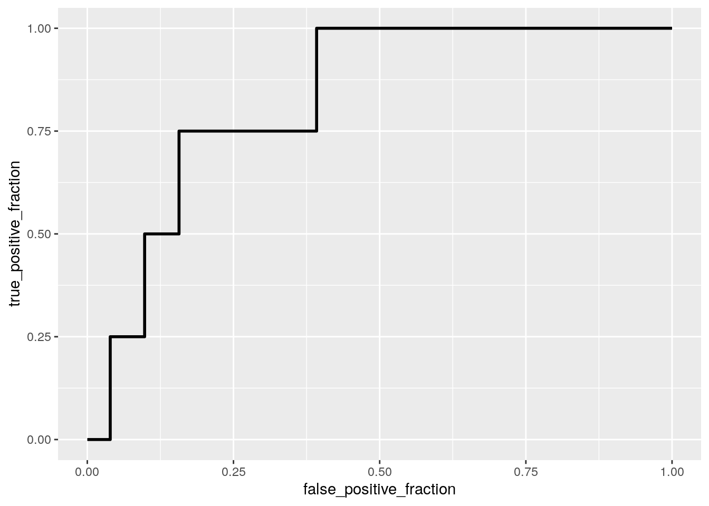

This is an R Markdown document. Markdown is a simple formatting syntax for authoring HTML, PDF, and MS Word documents. For more details on using R Markdown see http://rmarkdown.rstudio.com.
When you click the Knit button a document will be generated that includes both content as well as the output of any embedded R code chunks within the document. You can embed an R code chunk like this:
library(tidyverse)## ── Attaching packages ────────────────────────────────────────────────────────── tidyverse 1.2.1 ──## ✔ ggplot2 3.2.1 ✔ purrr 0.3.2
## ✔ tibble 2.1.3 ✔ dplyr 0.8.3
## ✔ tidyr 1.0.0.9000 ✔ stringr 1.4.0
## ✔ readr 1.3.1 ✔ forcats 0.4.0## ── Conflicts ───────────────────────────────────────────────────────────── tidyverse_conflicts() ──
## ✖ dplyr::filter() masks stats::filter()
## ✖ dplyr::lag() masks stats::lag()library(tidyr)
library(ggplot2)
library(dplyr)
library(lmtest)## Loading required package: zoo##
## Attaching package: 'zoo'## The following objects are masked from 'package:base':
##
## as.Date, as.Date.numericlibrary(sandwich)
library(glmnet)## Loading required package: Matrix##
## Attaching package: 'Matrix'## The following objects are masked from 'package:tidyr':
##
## expand, pack, unpack## Loading required package: foreach##
## Attaching package: 'foreach'## The following objects are masked from 'package:purrr':
##
## accumulate, when## Loaded glmnet 2.0-16library(plotROC)life <- read.csv(file = "Life Expectancy Data.csv")
health <- read.csv(file = "Health Infrastructure Dataset.csv")
data <- full_join(life, health, by="Country")## Warning: Column `Country` joining factors with different levels, coercing to
## character vectordata <- data %>%
na.omit() %>%
rename(Year = Year.x) %>%
rename("Life Expectancy (Age)" = Life.expectancy) %>%
rename("Adult Mortality (per 1000)" = Adult.Mortality) %>%
rename("Infant Deaths (per 1000)" = infant.deaths) %>%
rename("Percentage Expenditure on Health (% of GDP)" = percentage.expenditure) %>%
rename("Under-5 Deaths (per 1000)" = under.five.deaths) %>%
rename("Total Government Expenditure on Health (% of Total Gov't Expenditure)"= Total.expenditure) %>%
rename("GDP (in USD)" = GDP) %>%
rename("Hospitals (density per 100,000)" = Total.density.per.100.000.population..Hospitals) %>%
rename("Specialty Hospitals (density per 100,000" = Total.density.per.100.000.population..Specialized.hospitals) %>%
select(-c("Year.y", "Alcohol", "Hepatitis.B", "Measles", "Polio", "Diphtheria", "HIV.AIDS", "thinness..1.19.years", "thinness.5.9.years", "Income.composition.of.resources", "Schooling", "Total.density.per.100.000.population..Health.posts", "Total.density.per.100.000.population..Health.centres", "Total.density.per.100.000.population..District.rural.hospitals", "Total.density.per.100.000.population..Provincial.hospitals"))The joined dataset contains health data for a variety of developing and developed countries from the year 2013. To clarify, specialty hospitals are hospitals such as cardiology centers, cancer treatment centers, etc.
M <- cbind(data$`Life Expectancy (Age)`, data$`Adult Mortality (per 1000)`, data$`Infant Deaths (per 1000)`, data$`Percentage Expenditure on Health (% of GDP)`, data$BMI, data$`Under-5 Deaths (per 1000)`, data$`Total Government Expenditure on Health (% of Total Gov't Expenditure)`, data$`GDP (in USD)`, data$Population, data$`Hospitals (density per 100,000)`, data$`Specialty Hospitals (density per 100,000)`)
man_1<-manova(M~Status, data=data)
summary(man_1)## Df Pillai approx F num Df den Df Pr(>F)
## Status 1 0.26185 1.5608 10 44 0.1507
## Residuals 53summary.aov(man_1)## Response 1 :
## Df Sum Sq Mean Sq F value Pr(>F)
## Status 1 287.74 287.744 5.9533 0.01807 *
## Residuals 53 2561.70 48.334
## ---
## Signif. codes: 0 '***' 0.001 '**' 0.01 '*' 0.05 '.' 0.1 ' ' 1
##
## Response 2 :
## Df Sum Sq Mean Sq F value Pr(>F)
## Status 1 13480 13480 0.9958 0.3229
## Residuals 53 717400 13536
##
## Response 3 :
## Df Sum Sq Mean Sq F value Pr(>F)
## Status 1 2001 2000.8 0.7285 0.3972
## Residuals 53 145567 2746.6
##
## Response 4 :
## Df Sum Sq Mean Sq F value Pr(>F)
## Status 1 3850890 3850890 15.219 0.0002717 ***
## Residuals 53 13410732 253033
## ---
## Signif. codes: 0 '***' 0.001 '**' 0.01 '*' 0.05 '.' 0.1 ' ' 1
##
## Response 5 :
## Df Sum Sq Mean Sq F value Pr(>F)
## Status 1 2605.6 2605.58 7.7212 0.007534 **
## Residuals 53 17885.4 337.46
## ---
## Signif. codes: 0 '***' 0.001 '**' 0.01 '*' 0.05 '.' 0.1 ' ' 1
##
## Response 6 :
## Df Sum Sq Mean Sq F value Pr(>F)
## Status 1 3731 3730.9 0.8559 0.3591
## Residuals 53 231042 4359.3
##
## Response 7 :
## Df Sum Sq Mean Sq F value Pr(>F)
## Status 1 13.066 13.066 2.7364 0.104
## Residuals 53 253.075 4.775
##
## Response 8 :
## Df Sum Sq Mean Sq F value Pr(>F)
## Status 1 202292350 202292350 14.599 0.000351 ***
## Residuals 53 734396430 13856536
## ---
## Signif. codes: 0 '***' 0.001 '**' 0.01 '*' 0.05 '.' 0.1 ' ' 1
##
## Response 9 :
## Df Sum Sq Mean Sq F value Pr(>F)
## Status 1 2.8738e+14 2.8738e+14 0.2573 0.6141
## Residuals 53 5.9188e+16 1.1167e+15
##
## Response 10 :
## Df Sum Sq Mean Sq F value Pr(>F)
## Status 1 2.74 2.736 0.0471 0.829
## Residuals 53 3078.03 58.076The MANOVA test has a p-value of 0.1507, thus there is no mean difference across status for any of the numerical variables. If they were significant 11 univariate ANOVAs would’ve been ran for a total of 12 tests. Thus α = .05/12 = .0041. Although the test says non-significant, this data is not likely to pass the randomization test since it was taken from a dataset that had available data. Countries with all this data available despite still being developing would be more developed than other developing countries that are really lacking in health resources. It’s likely that data wouldn’t exist for some of these countries. Thus, the data being used has countries on a more even plane which could account for why there is no significant difference. Especially as really developed countries like the US or Canada aren’t part of the dataset.
data %>%
group_by(Status) %>%
summarize(means=mean(`Life Expectancy (Age)`)) %>%
summarize(`mean_diff:`=diff(means))## # A tibble: 1 x 1
## `mean_diff:`
## <dbl>
## 1 -8.81rand_dist<-vector()
for(i in 1:5000){
new<-data.frame(Age=sample(data$`Life Expectancy (Age)`),condition=data$Status)
rand_dist[i]<-mean(new[new$condition=="Developing",]$Age)-
mean(new[new$condition=="Developed",]$Age)}
mean(rand_dist>8.807)*2## [1] 0.0208hist(rand_dist,main="Mean Diff of Life Expectancy for Developing vs. Developed Countries",ylab="Frequency"); abline(v = -8.807,col="red")
The mean difference calculated between life expectancy for developing vs. developed countries was 8.807. The p-value obtained using a random distribution was 0.024. The null hypothesis is the mean life expectancy is the same for developing vs. developed countries. The alternative hypothesis is that the life expectancy is different for developing vs. developed countries. With a p-value of 0.024, the null is rejected, there is a significant difference is the life expectancy of developing vs. developed countries.
data$BMI_c <- data$BMI - mean(data$BMI)
data$Spend <- data$`Total Government Expenditure on Health (% of Total Gov't Expenditure)` - mean(data$`Total Government Expenditure on Health (% of Total Gov't Expenditure)`)
fit <- lm(`Adult Mortality (per 1000)` ~ BMI_c*Spend, data = data)
summary(fit)##
## Call:
## lm(formula = `Adult Mortality (per 1000)` ~ BMI_c * Spend, data = data)
##
## Residuals:
## Min 1Q Median 3Q Max
## -232.812 -47.986 -3.369 57.257 231.272
##
## Coefficients:
## Estimate Std. Error t value Pr(>|t|)
## (Intercept) 173.01126 14.95917 11.566 7.2e-16 ***
## BMI_c -2.54414 0.77586 -3.279 0.00188 **
## Spend -1.41617 7.21203 -0.196 0.84511
## BMI_c:Spend 0.03928 0.34880 0.113 0.91077
## ---
## Signif. codes: 0 '***' 0.001 '**' 0.01 '*' 0.05 '.' 0.1 ' ' 1
##
## Residual standard error: 107.9 on 51 degrees of freedom
## Multiple R-squared: 0.1869, Adjusted R-squared: 0.1391
## F-statistic: 3.908 on 3 and 51 DF, p-value: 0.01376qplot(x = Spend, y = `Adult Mortality (per 1000)`, color = BMI_c, data = data) +
stat_smooth(method = "lm", se = FALSE, fullrange = TRUE)
new1<-data
new1$BMI_c<-mean(data$BMI_c)
new1$mean<-predict(fit,new1)
new1$BMI_c<-mean(data$BMI_c)+sd(data$BMI_c)
new1$plus.sd<-predict(fit,new1)
new1$BMI_c<-mean(data$BMI_c)-sd(data$BMI_c)
new1$minus.sd<-predict(fit,new1)
newint<-new1%>%select(`Adult Mortality (per 1000)`,Spend,mean,plus.sd,minus.sd)%>%gather(BMI,value,-`Adult Mortality (per 1000)`,-Spend)
mycols<-c("#619CFF","#F8766D","#00BA38")
names(mycols)<-c("-1 sd","mean","+1 sd")
mycols=as.factor(mycols)
ggplot(data,aes(Spend,`Adult Mortality (per 1000)`),group=mycols)+geom_point()+geom_line(data=new1,aes(y=mean,color="mean"))+geom_line(data=new1,aes(y=plus.sd,color="+1 sd"))+geom_line(data=new1,aes(y=minus.sd,color="-1 sd"))+scale_color_manual(values=mycols)+labs(color="PTS (cont)")+theme(legend.position=c(.9,.2))
resids<-fit$residuals; fitvals<-fit$fitted.values
ggplot()+geom_point(aes(fitvals,resids))+geom_hline(yintercept=0, col="red")
ggplot()+geom_histogram(aes(resids),bins=20)
coeftest(fit)[,1:2]## Estimate Std. Error
## (Intercept) 173.01125888 14.9591713
## BMI_c -2.54413643 0.7758583
## Spend -1.41616517 7.2120279
## BMI_c:Spend 0.03928412 0.3487975coeftest(fit, vcov=vcovHC(fit))[,1:2]## Estimate Std. Error
## (Intercept) 173.01125888 15.3010039
## BMI_c -2.54413643 0.8078829
## Spend -1.41616517 9.4707537
## BMI_c:Spend 0.03928412 0.4278942fit2 <- lm(`Adult Mortality (per 1000)` ~ BMI_c+Spend, data = data)
summary(fit2)##
## Call:
## lm(formula = `Adult Mortality (per 1000)` ~ BMI_c + Spend, data = data)
##
## Residuals:
## Min 1Q Median 3Q Max
## -234.339 -46.897 -4.478 57.098 232.617
##
## Coefficients:
## Estimate Std. Error t value Pr(>|t|)
## (Intercept) 173.4000 14.4167 12.028 < 2e-16 ***
## BMI_c -2.5470 0.7681 -3.316 0.00167 **
## Spend -1.1469 6.7394 -0.170 0.86553
## ---
## Signif. codes: 0 '***' 0.001 '**' 0.01 '*' 0.05 '.' 0.1 ' ' 1
##
## Residual standard error: 106.9 on 52 degrees of freedom
## Multiple R-squared: 0.1867, Adjusted R-squared: 0.1554
## F-statistic: 5.968 on 2 and 52 DF, p-value: 0.00464anova(fit, fit2, test = "LRT")## Analysis of Variance Table
##
## Model 1: `Adult Mortality (per 1000)` ~ BMI_c * Spend
## Model 2: `Adult Mortality (per 1000)` ~ BMI_c + Spend
## Res.Df RSS Df Sum of Sq Pr(>Chi)
## 1 51 594277
## 2 52 594425 -1 -147.81 0.9103The intercept coefficient means that with a mean BMI and a mean expenditure, the adult mortality for a country would be 173 people per every 1000. This number decreases by 2.55 people for every 1 increase in BMI and decreases by 1.15 people for every 1% increase in government expenditure on health. With the interaction, 0.04 people should be added to the total regardless if BMI or expenditure is 0 as this interaction states that the BMI is different based on what the % expenditure on health is. Linearity and homoskedasticity pass graphically. Normality is on the cusp of passing, the sample is not quite random, thus bell curve normality was obtained, but there is no obvious skew. Using robust SEs, standard errors increased for the intercept, BMI, % expenditure and the interaction. The model created explains .1869^2 = 3.5% of the variation in Adult Mortality. By comparing the interaction model to the model with no interactions it is shown that the interaction model is better with a p-value of 0.9, so we fail to reject the null hypothesis. This ultimately makes sense as countries with more expenditure on health tend to have lower BMI which therefore increases mortality.
samp_distn<-replicate(5000, {
boot_dat<-data[sample(nrow(data),replace=TRUE),]
fit<-lm(`Adult Mortality (per 1000)` ~ BMI_c*Spend, data=boot_dat)
coef(fit)
})
samp_distn%>%t%>%as.data.frame%>%summarize_all(sd)## (Intercept) BMI_c Spend BMI_c:Spend
## 1 14.19418 0.7591152 8.631085 0.4016259Compared to the original SEs, the intercept and the BMI_c bootstrapped SEs were lower while the expenditure and interaction bootstrapped SEs were increased. When comparing to the robust SEs. the intercept, BMI, expenditure and interaction bootstrapped SEs were all lower.
data$y <- ifelse(data$Status == "Developed", 1, 0)
fit3<-glm(y~`Infant Deaths (per 1000)` + `Hospitals (density per 100,000)` ,data=data,family=binomial(link="logit"))## Warning: glm.fit: fitted probabilities numerically 0 or 1 occurredcoeftest(fit3)##
## z test of coefficients:
##
## Estimate Std. Error z value Pr(>|z|)
## (Intercept) -1.07969 0.95133 -1.1349 0.2564
## `Infant Deaths (per 1000)` -0.54617 0.55766 -0.9794 0.3274
## `Hospitals (density per 100,000)` -0.21805 0.42325 -0.5152 0.6064probs<-predict(fit3,type="response")
class_diag<-function(probs,truth){
tab<-table(factor(probs>.2,levels=c("FALSE","TRUE")),truth)
acc=sum(diag(tab))/sum(tab)
sens=tab[2,2]/colSums(tab)[2]
spec=tab[1,1]/colSums(tab)[1]
ppv=tab[2,2]/rowSums(tab)[2]
if(is.numeric(truth)==FALSE & is.logical(truth)==FALSE) truth<-as.numeric(truth)-1
ord<-order(probs, decreasing=TRUE)
probs <- probs[ord]; truth <- truth[ord]
TPR=cumsum(truth)/max(1,sum(truth))
FPR=cumsum(!truth)/max(1,sum(!truth))
dup<-c(probs[-1]>=probs[-length(probs)], FALSE)
TPR<-c(0,TPR[!dup],1); FPR<-c(0,FPR[!dup],1)
n <- length(TPR)
auc<- sum( ((TPR[-1]+TPR[-n])/2) * (FPR[-1]-FPR[-n]) )
data.frame(acc,sens,spec,ppv,auc)
}
class_diag(probs, data$y)## acc sens spec ppv auc
## 1 0.8545455 0.25 0.9019608 0.1666667 0.8284314table(truth=data$y, prediction=as.numeric(probs>.2))%>%addmargins## prediction
## truth 0 1 Sum
## 0 46 5 51
## 1 3 1 4
## Sum 49 6 55data$logit<-predict(fit3)
ggplot(data,aes(logit, fill=Status))+geom_density(alpha=.3)+
geom_vline(xintercept=0,lty=2)
ROCplot<-ggplot(data)+geom_roc(aes(d=y,m=probs), n.cuts=0)
ROCplot
calc_auc(ROCplot)## PANEL group AUC
## 1 1 -1 0.8284314set.seed(1234)
k=3
data1<-data[sample(nrow(data)),]
folds<-cut(seq(1:nrow(data)),breaks=k,labels=F)
diags<-NULL
for(i in 1:k){
train<-data1[folds!=i,]
test<-data1[folds==i,]
truth<-test$y
fit4<-glm(y~`Infant Deaths (per 1000)` + `Hospitals (density per 100,000)`,data=train,family="binomial")
probs<-predict(fit4,newdata = test,type="response")
diags<-rbind(diags,class_diag(probs,truth))
}## Warning: glm.fit: fitted probabilities numerically 0 or 1 occurred
## Warning: glm.fit: fitted probabilities numerically 0 or 1 occurred
## Warning: glm.fit: fitted probabilities numerically 0 or 1 occurredapply(diags,2,mean) ## acc sens spec ppv auc
## 0.8167641 0.6666667 0.8431373 NaN 0.7794118By looking at the coefficients of the logistic regression, we see that for 0 infant deaths or hospitals, log-odds is -1.08. Thus odds of being a devloped country are e^-1.08 = .340. For 1 infant death per 1000, log-odds is -1.08 - 0.55 = -1.63, thus odds are e^-1.63 = 0.195. For 1 hospital per 100,000 people, log-odds is -1.08 - 0.21 = -1.29, thus odds of being a developed country are 0.275. In order to display data for project circumstances, a probability cutoff of 0.2 was used since anything higher fit the data and thus was no longer a prediction. From the confusion matrix, the accuracy is 0.855, the sensitivity (TPR) is 0.25, the specificity (TNR) is 0.902 and the precision (PPV) is 0.167. The calculated auc is 0.828. This is a good AUC. Thus, this model shows that developed or developing status of a country can be predicted from infant deaths and hospitals. A better model is needed though since the probability cutoff needed to be reduced to 0.2. Likely this just means more data is needed as only 55 countries were used with only 4 being developed. After performing a 3-fold CV since there were only 81 observations, accuracy was 0.817, sensitivity was 0.667 and recall was nonexistant. A nonexistant ppv further shows that more data is needed especially a more representative dataset of developing vs. developed countries.
y<-as.matrix(data$y)
x<-data %>%
select(4:14) %>%
mutate_all(scale) %>%
as.matrix
cv<-cv.glmnet(x,y)
lasso1<-glmnet(x,y,lambda=cv$lambda.1se)
coef(lasso1)## 12 x 1 sparse Matrix of class "dgCMatrix"
## s0
## (Intercept) 0.07272727
## Life Expectancy (Age) 0.00000000
## Adult Mortality (per 1000) .
## Infant Deaths (per 1000) .
## Percentage Expenditure on Health (% of GDP) .
## BMI .
## Under-5 Deaths (per 1000) .
## Total Government Expenditure on Health (% of Total Gov't Expenditure) .
## GDP (in USD) .
## Population .
## Specialty Hospitals (density per 100,000 .
## Hospitals (density per 100,000) .set.seed(1234)
k= 3
data1<-data[sample(nrow(data)),]
folds<-cut(seq(1:nrow(data)),breaks=k,labels=F)
diags<-NULL
for(i in 1:k){
train<-data1[folds!=i,]
test<-data1[folds==i,]
truth<-test$y
fit5<-glm(y~`Life Expectancy (Age)`,data=train,family="binomial")
probs<-predict(fit5,newdata = test,type="response")
diags<-rbind(diags,class_diag(probs,truth))
}
diags%>%summarize_all(mean)## acc sens spec ppv auc
## 1 0.871345 0.5 0.9019608 0.4 0.8431373From the Lasso regression, we see that life expectancy is the most improtant predictor of whether a country is considered developed or developing. The accuracy of this model is 0.871 which is greater than the accuracy of the logistic regression model in the previous block. Thus, the Lasso regression model is a better fit.